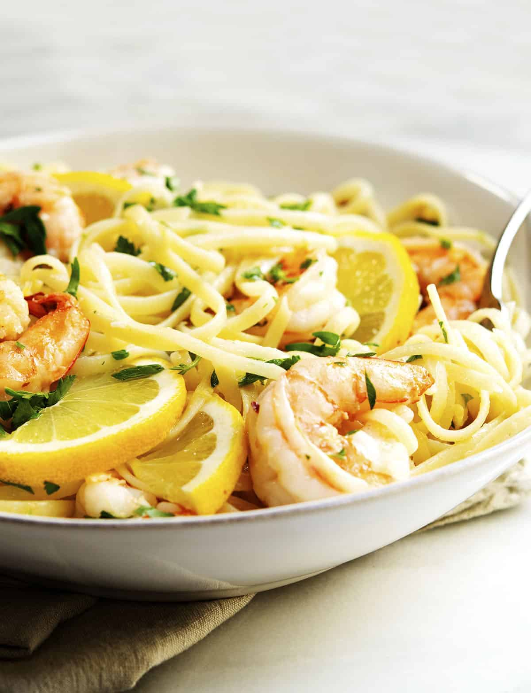

A Recipe for Garlic Butter Shrimp Pasta with Lemon

Description
Lemon garlic shrimp pasta has been a favorite of mine due to its simplicity, elegance, and overall tastiness.
It's a dish that can come together in 15-20 minutes, leaving you full but not bogged down.
The acidity helps to cut into the richness of the butter, the garlic helps to add a depth of flavor, and the lemon zest brightens up the entire dish.
Ingredients
- 300g spaghetti or preferred pasta
- Two tablespoons of butter
- Two teaspoons of red chili flakes
- Five garlic cloves
- 500g of frozen shrimp
- Five cups of water
- Two teaspoons dried parsley
- One whole lemon
- Salt to taste
Steps
- Bring the water to a boil in a shallow pan and add your pasta. Cook according to the package instructions. Add salt to season the pasta.
- While the pasta is cooking, prepare your other ingredients.
- Remove the peel from your garlic cloves if needed and finely mince them. You can also use a garlic press.
- Use a zester or microplane to remove the lemon zest from the lemon and set aside.
- Squeeze the juice of the lemon into a bowl.
- Assess the doneness of the pasta. If it is done, drain some of the water away, keeping a half cup of pasta water for later. If it is not, move on to the next step.
- Add the butter to a frying pan and wait until it starts to sizzle.
- Add the garlic cloves and chili flakes and allow them to fry for 30 seconds.
- Add the frozen shrimp and cook until both sides of the shrimp are pink. Should only take a minute. Add salt to taste at this point.
- Add the cooked pasta to the pan and vigorously stir to form a nice, smooth sauce.
- Remove the pan from heat and add the juice of the lemon, the lemon zest, and the parsley.
- Give the pan one last good stir and serve while still hot.